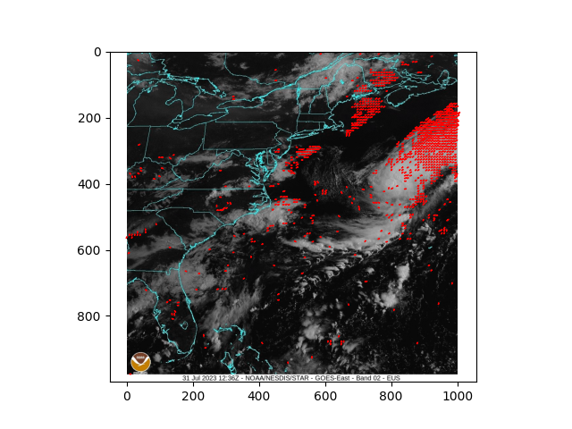
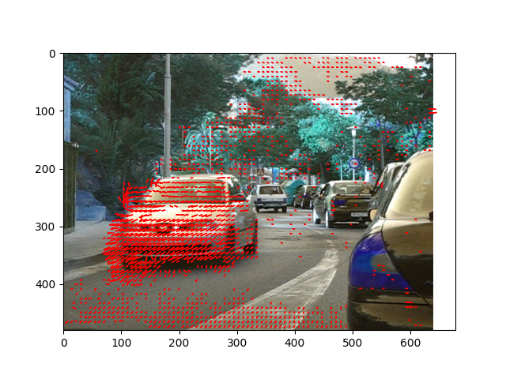
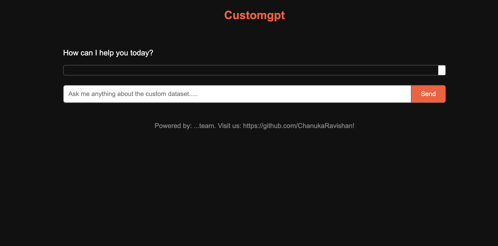
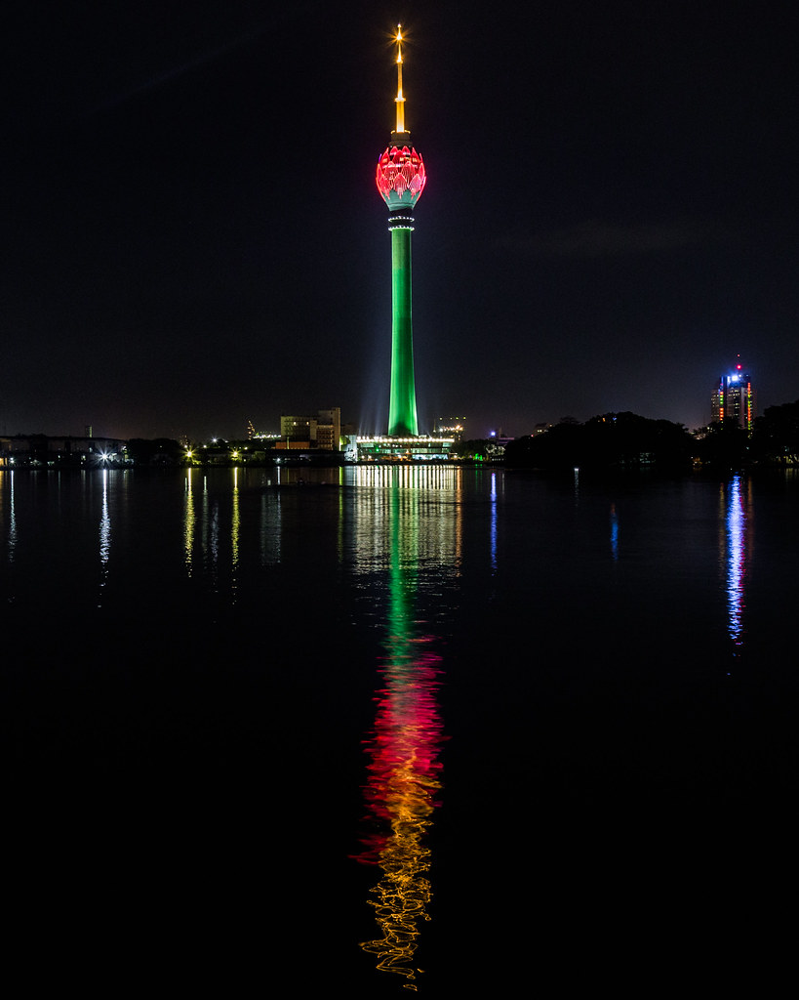
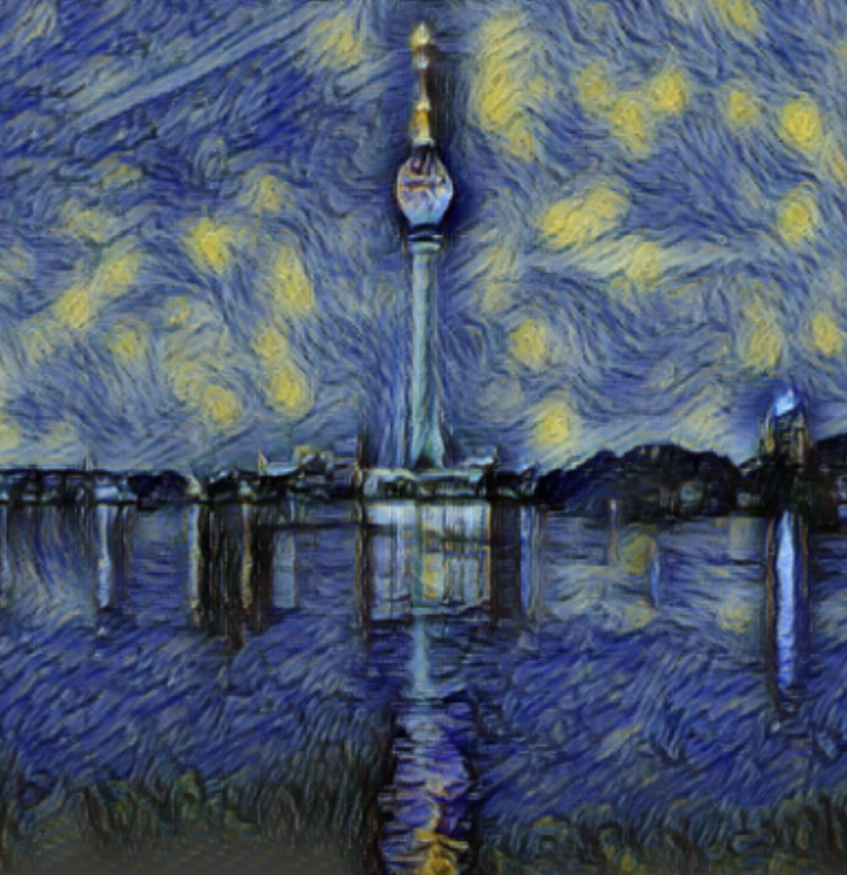

|
Chanuka Algama I'm a Researcher at LIRNEasia, a leading think tank active across Asia-Pacific region, where I work with the Data, Algorithms and Policy team. I hold a BSc (Honours) in Computer Science from the University of Kelaniya. One of my work was recently recognized when I won 2nd place at the IEEE’s Standards for Secure and Trusted Learning Systems competition which held in Valencia, Spain. |
{kind=link}
ResearchI'm interested in computer vision, deep learning, generative AI, and image processing. My research primarily focuses on interpreting aspects of the physical world—such as shape, motion, color, and light—from images, often through the use of radiance fields. Some papers are highlighted. |
|


|
Robust Optical Flow calculation: A higher order differential approach
Under review at VISAPP, 2025
Primary Focus: Solutions for the challenge of optimal correspondence calculation under conditions of substantial nonlinear motion patterns and vulnerability of the flow constraint to rapid spatial transformations.
|
.png)
|
Informing Public Policy with Machine Learning: Mapping Poverty in Sri Lanka Using Mobile Call Detail Records and Remote Sensing Data
Kasun Amarasinghe Merl Chandana Viren Dias Accepted AAAI 2025, AI for Public Missions To combat poverty effectively, the project examined the potential of utilizing mobile call detail records and remote sensing data to gain fresh insights into poverty’s spatial distribution. It used spatial econometric models, including Spatial Error and Bayesian Geostatistical models, to capture spatial dependencies and identify patterns of poverty. |


|
Using Medium Resolution Satellite Imagery and Machine Learning to Redefine Urban Areas in Sri
Lanka
This research introduced an end-to-end open-source pipeline to predict the Built-up (Bu) and Non-Built-up (NBU) areas using satellite band data. Finally, the project provides the code base for implementing the UN- Habitat definition What is a City, to understand the patterns, trends, and boundaries of urbanization. |
|

|
Conversational RAG with Memory-Based Context Enhancement
Primary Focus: RAG(Retrieval augmented generation) faces limitations in capturing context and understanding complex queries as the proximity of text chunks in the embedding space does not guarantee a meaningful question-and-answer pair. |
|


|
When Deep Learning Meets Van Gough
This works by using a deep neural network to take two images—a content image and a feature image—and blend them together so that the output image looks like the content image but "painted" in the style of the style image. VGG-19, a 19-layer CNN trained on the ImageNet dataset, is utilized here. Since this implementation doesn't require training or fully connected layers, the trainable parameters are set to False. To obtain a multi-level representation of the style image, feature correlations are calculated between different feature maps. The content loss between the content image and the output image is computed using the mean squared error (MSE) of localized shapes. However, for the style image, calculating loss through MSE is less effective, as the goal is to mimic the color and texture in the output image. Therefore, the Gram matrix is used to capture a more general representation of the style image. |
|
Under construction |